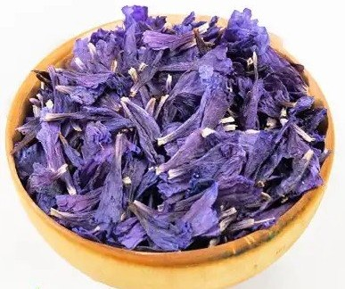

طب سنتی ایرانی و گیاهان دارویی
معرفی طب سنتی ایرانی
طب سنتی ایرانی (یا پزشکی سنتی ایران) یکی از کهنترین و کاملترین نظامهای پزشکی جهان است که ریشه در بیش از ۷۰۰۰ سال دانش و تجربه ایرانیان دارد. این طب از دوران باستان (تمدنهای ایلامی، هخامنشی و ساسانی) آغاز شد و در دانشگاه جندیشاپور (قدیمیترین مرکز علمی پزشکی جهان) به اوج رسید؛ جایی که دانش ایرانی با آموزههای یونانی، هندی و بینالنهرینی ترکیب شد و پایههای طب اسلامی را بنا نهاد.
حکیمان بزرگی مانند محمد زکریای رازی، شیخالرئیس ابوعلی سینا و اسماعیل جرجانی این مکتب را با کتابهایی مثل «قانون در طب» و «الحاوی» به کمال رساندند. این دانشمندان نه تنها بیماریها را درمان میکردند، بلکه بر **حفظ سلامتی** (حفظ الصحه) تأکید داشتند و معتقد بودند پیشگیری آسانتر از درمان است.
پایههای اصلی طب سنتی ایرانی عبارتند از:
- چهار عنصر اصلی (آب، خاک، آتش، هوا) که جهان و بدن انسان را تشکیل میدهند.
- چهار خلط (دم، صفرا، بلغم، سودا) که تعادل آنها باعث سلامتی و عدم تعادل منجر به بیماری میشود.
- مزاجشناسی (گرم، سرد، تر، خشک) که هر فرد مزاج منحصربهفردی دارد و درمان بر اساس آن شخصیسازی میشود.
- سته ضروریه (اصول ششگانه سلامت): هوا، غذا و نوشیدنی، خواب و بیداری، حرکت و سکون، حالات روحی و روانی، و دفع و احتباس مواد زائد.
در این نظام، درمان عمدتاً با گیاهان طبیعی، رژیم غذایی مناسب، اصلاح سبک زندگی، و روشهایی مانند حجامت، ماساژ و داروهای گیاهی انجام میشود. گیاهانی مثل زعفران (نشاطآور و تقویتکننده قلب)، نعناع (ضد نفخ و گوارشی)، گل گاوزبان (آرامبخش اعصاب)، بابونه (ضد التهاب و خوابآور)، آویشن (ضد عفونت تنفسی) و بسیاری دیگر، خواص درمانی گستردهای دارند و قرنها در حفظ سلامت ایرانیان نقش کلیدی ایفا کردهاند.
گیاهان دارویی محبوب
زعفران
زعفران (طلای سرخ) در طب سنتی ایرانی طبع گرم و خشک دارد. نشاطآور، تقویتکننده قلب و اعصاب، بهبوددهنده خلقوخو و ضد افسردگی است. به هضم غذا کمک میکند، کبد را تقویت و تصفیه مینماید، حافظه را قوی میکند، قوای جنسی را افزایش میدهد و در درمان بیخوابی ناشی از تحریکات مغزی مفید است. همچنین خاصیت آنتیاکسیدانی قوی دارد و در کاهش التهاب و پیشگیری از برخی بیماریها نقش دارد.
نعناع
نعناع با طبع گرم و خشک، تقویتکننده معده، ضد نفخ و بادشکن قوی است. در طب سنتی برای درمان مشکلات گوارشی مثل دلدرد، تهوع، اسهال و سوءهاضمه استفاده میشود. سردردهای سرد را تسکین میدهد، نشاطآور و مقوی قلب است، خون غلیظ را رقیق میکند، دنداندرد را آرام مینماید و در رفع گرفتگی گلو، بینی و مجاری تنفسی مؤثر است. منتول موجود در آن احساس خنکی ایجاد کرده و خاصیت ضدعفونیکننده دارد.

گل گاوزبان
گل گاوزبان با طبع گرم و تر، آرامبخش اعصاب، کاهشدهنده استرس، اضطراب و افسردگی است. در طب سنتی ایرانی نشاطآور، تقویتکننده قلب، مغز و اعصاب شناخته میشود. برای درمان بیخوابی، سردردهای عصبی، تنگی نفس، گلودرد، سنگ کلیه و مثانه مفید است. خلطآور، مسهل صفرا و سودا، تصفیهکننده خون و ضد التهاب است و فشار خون را تنظیم میکند.
بابونه
بابونه با طبع گرم و خشک، آرامبخش قوی، ضد التهاب و ضد اسپاسم است. در طب سنتی برای تقویت معده، درمان زخم و ورم معده، رفع نفخ، دلدرد و مشکلات گوارشی استفاده میشود. خوابآور، کاهشدهنده اضطراب و استرس، تسکیندهنده دردهای قاعدگی و التهابهای پوستی است. خاصیت ضد باکتریایی دارد و در درمان سرماخوردگی، گلودرد و عفونتهای تنفسی مؤثر است.
آویشن
آویشن (صعتر) با طبع گرم و خشک، ضد عفونت، خلطآور و تقویتکننده سیستم ایمنی است. در طب سنتی برای درمان سرفه، برونشیت، گلودرد، عفونتهای تنفسی و پاکسازی ریه از رطوبات مفید است. ضد نفخ، اشتهاآور، تقویتکننده معده و کبد، مسکن دردهای عضلانی و مفصلی، ضد کرم معده و روده است. خاصیت ضد باکتریایی و ضد قارچی قوی دارد و در دفع سنگ کلیه کمک میکند.
زیره سبز
زیره سبز با طبع گرم و خشک، بادشکن قوی، ضد نفخ و تقویتکننده هضم است. در طب سنتی اشتهاآور، کمک به درمان سوءهاضمه، دلدرد، اسهال و یبوست است. کبد را پاکسازی میکند، چربیسوزی را افزایش میدهد، قند خون را کنترل مینماید و در کاهش وزن مؤثر است. خاصیت ضد التهابی دارد و برای درمان هموروئید، تقویت معده و کاهش کلسترول مفید است.
راهنمای استفاده از سایت
- ابتدا وارد سامانه شوید.
- خواص گیاهان دارویی را مطالعه کنید.
- محصول مورد نظر را به سبد خرید اضافه کنید.
- در انتهای صفحه مجموع خرید را مشاهده نمایید.
فروش گیاهان دارویی
زعفران (۱۰۰ گرم)
قیمت: ۲۰۰,۰۰۰ تومان
نعناع خشک (۲۰۰ گرم)
قیمت: ۵۰,۰۰۰ تومان
گل گاوزبان (۱۰۰ گرم)
قیمت: ۸۵,۰۰۰ تومان
بابونه خشک (۱۵۰ گرم)
قیمت: ۶۰,۰۰۰ تومان
آویشن کوهی (۱۰۰ گرم)
قیمت: ۴۵,۰۰۰ تومان
زیره سبز (۲۰۰ گرم)
قیمت: ۷۰,۰۰۰ تومان
سبد خرید
مجموع: ۰ تومان